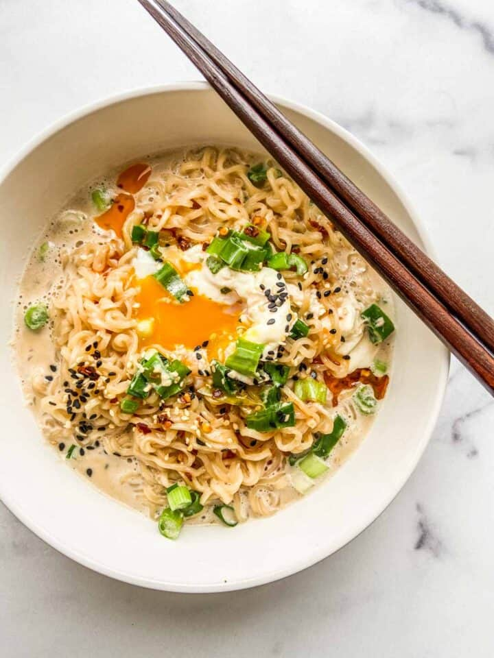

Milk Ramen

Description
Who said rich flavor had to break the bank?
Milk Ramen combines all the richness of milk with all the broke umami flavor of cheap ramen.
Ingredients
- 1 Package of instant ramen
- 1 egg
- 1 cup of milk
- 2 chopped green onions
- 1 teaspoon chili oil (optional)
Steps
- In a small pot, heat three cups of water over high heat. Once the water is boiling, add the noodles and boil for 1 1/2 minutes. Drain the noodles.
- Add the milk to the same pot and bring to a boil over high heat. Add the sauce packet and stir till combined. Add in the noodles and reduce the heat to medium-high.
- Make a well in the noodles and crack the egg into it. Sprinkle the chopped green onions on top. Let this cook for 2 minutes then turn off the heat.
- Scoop up the poached egg with a spoon and then pour the noodles and milk into a bowl. Place the egg on top. Sprinkle with sesame seeds and drizzle the chili oil.
- Serve immediately.